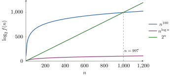
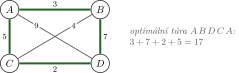
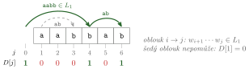
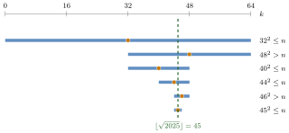
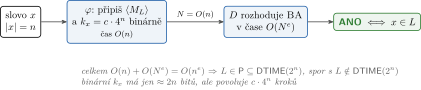

3.6 Úlohy navíc¶
Úlohy procvičují \(O\)-notaci (oddíl 3.2), lineární zrychlení (oddíl 3.1), třídy \(\href{ch-cas-tridy-p-a-exp.html#def-tridy}{\class{woo-pk-def-tridy}{\PP}}\) a \(\href{ch-cas-tridy-p-a-exp.html#def-tridy}{\class{woo-pk-def-tridy}{\EXP}}\) (oddíly 3.3 a 3.4) a větu o časové hierarchii (oddíl 3.5). Čas vždy měříme vůči délce zápisu vstupu – na tom stojí úlohy 3.6 a 3.8.
Neoficiální úlohy
Úlohy v tomto oddílu nejsou oficiální zadání předmětu. Jsou to procvičovací úlohy navíc k látce kapitoly; všechna čísla, tabulky a průběhy algoritmů jsou přepočítané krátkými skripty v Pythonu (algoritmy z úloh 3.5 a 3.6 porovnané s hrubou silou na všech malých vstupech), čistě důkazové části jsou překontrolované ručně.
3.6.1 Rozcvička¶
Úloha 3.1 (seřazení funkcí podle růstu)
Seřaďte funkce
do posloupnosti \(f_1,\dots,f_9\) tak, aby pro každé \(i\) platilo \(f_i=O(f_{i+1})\) a zároveň \(f_{i+1}\neq O(f_i)\). Pak rozhodněte, které z funkcí jsou shora omezené polynomem (algoritmus s takovým časem dokazuje příslušnost do \(\href{ch-cas-tridy-p-a-exp.html#def-tridy}{\class{woo-pk-def-tridy}{\PP}}\)) a které funkcí \(2^{n^d}\) pro nějaké \(d\) (příslušnost do \(\href{ch-cas-tridy-p-a-exp.html#def-tridy}{\class{woo-pk-def-tridy}{\EXP}}\)). Logaritmus je podle konvence skript \(\log n=\max\{1,\lceil\log_2 n\rceil\}\).
Řešení
Výsledek: \(\sqrt n,\ n\log n,\ 4^{\log n},\ n^{100},\ n^{\log n},\ 2^n,\ 3^n,\ n!,\ 2^{2^n}\).
Nástroj. Pro \(f_{i+1}\neq O(f_i)\) stačí ukázat \(f_{i+1}(n)/f_i(n)\to\infty\): pak pro žádné \(c\) neplatí \(f_{i+1}(n)\le c\cdot f_i(n)\) pro všechna \(n\). Pro \(f_i=O(f_{i+1})\) stačí \(f_i(n)\le f_{i+1}(n)\) od nějakého \(n_0\); konečně mnoho menších \(n\) pohltí konstanta \(c\) (oddíl 3.2). U rychle rostoucích funkcí porovnáváme logaritmy: \(f/g\to\infty\) právě když \(\log_2 f-\log_2 g\to\infty\).
- \(\sqrt n\) a \(n\log n\): \(\sqrt n\le n\le n\log n\) a \(n\log n/\sqrt n\ge\sqrt n\to\infty\).
- \(n\log n\) a \(4^{\log n}\): pozor, pro \(n\ge2\) je \(4^{\log n}=\bigl(2^{\lceil\log_2 n\rceil}\bigr)^2\) a \(n\le 2^{\lceil\log_2 n\rceil}<2n\), takže \(n^2\le 4^{\log n}<4n^2\) (pro \(n=1\) je \(4^{\log 1}=4=4n^2\)) – je to polynom \(\Theta(n^2)\), ne exponenciála. Proto \(n\log n\le n^2\le 4^{\log n}\) (protože \(\log n\le n\)) a \(4^{\log n}/(n\log n)\ge n/\log n\to\infty\).
- \(4^{\log n}\) a \(n^{100}\): \(4^{\log n}\le4n^2\le 4n^{100}\), tedy \(c=4\); naopak \(n^{100}/(4n^2)\to\infty\).
- \(n^{100}\) a \(n^{\log n}\): pro \(n> 2^{99}\) je \(\log n\ge100\), a tedy \(n^{100}\le n^{\log n}\); podíl \(n^{\log n}/n^{100}=n^{\log n-100}\to\infty\). Asymptoticky větší funkce předežene tu menší až u \(n\approx 2^{100}\) – \(O\)-notace o malých vstupech nic neříká.
- \(n^{\log n}\) a \(2^n\): \(\log_2 n^{\log n}=\log n\cdot\log_2 n\le(\log_2 n+1)^2\) a \(n-(\log_2 n+1)^2\to\infty\). (Přímým výpočtem je \(n^{\log n}\le 2^n\) pro všechna \(n\ge23\).)
- \(2^n\) a \(3^n\): \(3^n/2^n=(3/2)^n\to\infty\), a \(2^n\le3^n\).
- \(3^n\) a \(n!\): \(n!\ge3^n\) pro \(n\ge7\) (\(7!=5040\ge2187=3^7\), a každý další krok násobí levou stranu \(n+1\ge8\), pravou jen \(3\)); podíl \(n!/3^n\) roste od \(n=7\) aspoň \(8/3\)-krát za krok, jde tedy do nekonečna.
- \(n!\) a \(2^{2^n}\): \(n!\le n^n=2^{n\log_2 n}\) a \(2^n-n\log_2 n\to\infty\).
Zařazení. Polynomem omezené jsou \(\sqrt n\), \(n\log n\), \(4^{\log n}\) a \(n^{100}\) (všechny jsou \(O(n^{100})\)). Funkce \(n^{\log n}\) už ne: pro každé \(d\) je podle bodu 4 (s \(d\) místo \(100\)) \(n^{\log n}/n^d\to\infty\). Funkcí \(2^{n^d}\) je omezeno všechno až po \(n!\), protože \(n!\le2^{n\log_2 n}\le2^{n^2}\); algoritmus s časem \(n^{\log n}\), \(2^n\), \(3^n\) nebo \(n!\) tedy dokazuje příslušnost do \(\href{ch-cas-tridy-p-a-exp.html#def-tridy}{\class{woo-pk-def-tridy}{\EXP}}\) (jako hrubá síla pro \(\href{../ch-ts/ch-ts-optimalizacni-vs-rozhodovaci-problemy.html#prob-tsp}{\class{woo-pk-prob-tsp}{\prob{TSP}}}\) v oddílu 3.4). Funkce \(2^{2^n}\) ne: pro každé \(d\) je \(2^n-n^d\to\infty\), takže \(2^{2^n}/2^{n^d}\to\infty\).

Logaritmy tří funkcí (osa \(y\) je \(\log_2 f(n)\)). Všimni si: \(2^n\) předežene \(n^{100}\) až od \(n=997\) a \(n^{\log n}\) je na celém obrázku pod \(n^{100}\), přestože asymptoticky roste rychleji (předežene ji až u \(n\approx2^{100}\)).
Úloha 3.2 (hrubá síla vs. Held–Karp)
Čtyři města \(A,B,C,D\) mají vzdálenosti \(d(A,B)=3\), \(d(A,C)=5\), \(d(A,D)=9\), \(d(B,C)=4\), \(d(B,D)=7\), \(d(C,D)=2\).
- Najděte nejkratší okružní cestu hrubou silou: vypište všechny túry a jejich délky.
- Najděte ji Held–Karpovým dynamickým programováním (nad rámec přednášky): pro \(S\subseteq\{B,C,D\}\) a \(j\in S\) je \(C(S,j)\) délka nejkratší cesty, která začne v \(A\), projde právě města z \(S\) a skončí v \(j\). Vyplňte tabulku hodnot \(C(S,j)\) a z ní zrekonstruujte túru.
- Počítač udělá \(10^9\) kroků za sekundu, hrubá síla potřebuje \(n\cdot(n-1)!/2=n!/2\) kroků a Held–Karp \(n^2 2^n\) kroků. Spočítejte dobu běhu pro \(n=10,15,20,25,30\) a největší \(n\), které každý z algoritmů zvládne za hodinu.
Řešení
a) Hrubá síla. Začneme v \(A\); túr je \((n-1)!/2=3\) (túru a její obrácení počítáme jednou):
- \(A\,B\,C\,D\,A\): \(3+4+2+9=18\),
- \(A\,B\,D\,C\,A\): \(3+7+2+5=17\),
- \(A\,C\,B\,D\,A\): \(5+4+7+9=25\).
Optimum je \(17\), túra \(A\,B\,D\,C\,A\).

Instance úlohy; zeleně optimální túra, tence dvě hrany, které v ní nejsou.
b) Held–Karp. Rekurence: \(C(\{j\},j)=d(A,j)\) a pro \(|S|\ge2\)
Nejkratší cesta přes \(S\) končící v \(j\) má před \(j\) nějaké město \(i\in S\setminus\{j\}\) a její část do \(i\) musí být nejkratší cestou přes \(S\setminus\{j\}\) končící v \(i\) – jinak bychom ji vyměnili za kratší. Tabulka po vrstvách podle \(|S|\) (pro \(|S|=3\) jsou ve výpočtu oba kandidáti \(C(S\setminus\{j\},i)+d(i,j)\) s vyznačeným \(i\)):
| \(S\) | \(j\) | výpočet | \(C(S,j)\) (předchůdce) |
|---|---|---|---|
| \(\{B\}\) | \(B\) | \(d(A,B)\) | \(3\) (\(A\)) |
| \(\{C\}\) | \(C\) | \(d(A,C)\) | \(5\) (\(A\)) |
| \(\{D\}\) | \(D\) | \(d(A,D)\) | \(9\) (\(A\)) |
| \(\{B,C\}\) | \(B\) | \(C(\{C\},C)+d(C,B)=5+4\) | \(9\) (\(C\)) |
| \(\{B,C\}\) | \(C\) | \(C(\{B\},B)+d(B,C)=3+4\) | \(7\) (\(B\)) |
| \(\{B,D\}\) | \(B\) | \(C(\{D\},D)+d(D,B)=9+7\) | \(16\) (\(D\)) |
| \(\{B,D\}\) | \(D\) | \(C(\{B\},B)+d(B,D)=3+7\) | \(10\) (\(B\)) |
| \(\{C,D\}\) | \(C\) | \(C(\{D\},D)+d(D,C)=9+2\) | \(11\) (\(D\)) |
| \(\{C,D\}\) | \(D\) | \(C(\{C\},C)+d(C,D)=5+2\) | \(7\) (\(C\)) |
| \(\{B,C,D\}\) | \(B\) | \(\min(\underbrace{11+4}_{i=C},\ \underbrace{7+7}_{i=D})\) | \(14\) (\(D\)) |
| \(\{B,C,D\}\) | \(C\) | \(\min(\underbrace{16+4}_{i=B},\ \underbrace{10+2}_{i=D})\) | \(12\) (\(D\)) |
| \(\{B,C,D\}\) | \(D\) | \(\min(\underbrace{9+7}_{i=B},\ \underbrace{7+2}_{i=C})\) | \(9\) (\(C\)) |
\(\mathrm{OPT}=\min(14+3,\ 12+5,\ 9+9)=\min(17,17,18)=17\). Rekonstrukce od \(j=B\): předchůdce \(B\) v \(C(\{B,C,D\},B)\) je \(D\), předchůdce \(D\) v \(C(\{C,D\},D)\) je \(C\), předchůdce \(C\) v \(C(\{C\},C)\) je \(A\). Túra je \(A\,C\,D\,B\,A\) s délkou \(5+2+7+3=17\) – tatáž jako v a), jen v opačném směru (proto minimum nastává pro \(j=B\) i \(j=C\)).
Počet operací. Tabulka má pro \(n\) měst \(\sum_{k}k\binom{n-1}{k}=(n-1)2^{n-2}\) položek (zde \(12\)), každá je minimem z méně než \(n\) možností: čas \(O(n^2 2^n)\) místo \(O(n\cdot n!)\).
c) Doba běhu. Při \(10^9\) krocích za sekundu (rok \(\approx3{,}16\cdot10^7\) s):
| \(n\) | \(n!/2\) kroků | hrubá síla | \(n^2 2^n\) kroků | Held–Karp |
|---|---|---|---|---|
| \(10\) | \(1{,}8\cdot10^{6}\) | \(1{,}8\) ms | \(1{,}0\cdot10^{5}\) | \(0{,}1\) ms |
| \(15\) | \(6{,}5\cdot10^{11}\) | \(10{,}9\) min | \(7{,}4\cdot10^{6}\) | \(7{,}4\) ms |
| \(20\) | \(1{,}2\cdot10^{18}\) | \(38{,}5\) roku | \(4{,}2\cdot10^{8}\) | \(0{,}42\) s |
| \(25\) | \(7{,}8\cdot10^{24}\) | \(2{,}5\cdot10^{8}\) let | \(2{,}1\cdot10^{10}\) | \(21\) s |
| \(30\) | \(1{,}3\cdot10^{32}\) | \(4{,}2\cdot10^{15}\) let | \(9{,}7\cdot10^{11}\) | \(16\) min |
Hodina je \(3{,}6\cdot10^{12}\) kroků. Hrubá síla zvládne nejvýše \(n=15\) (\(16!/2\approx1{,}05\cdot10^{13}\) už ne), Held–Karp \(n=31\) (\(31^2\cdot2^{31}\approx2{,}06\cdot10^{12}\), ale \(32^2\cdot2^{32}\approx4{,}4\cdot10^{12}\)). Oba algoritmy jsou exponenciální, takže \(\href{../ch-ts/ch-ts-optimalizacni-vs-rozhodovaci-problemy.html#prob-tsp}{\class{woo-pk-prob-tsp}{\prob{TSP}}}\) do \(\href{ch-cas-tridy-p-a-exp.html#def-tridy}{\class{woo-pk-def-tridy}{\PP}}\) nedostanou – lepší exponenciála jen posune hranici řešitelných instancí z \(15\) na \(31\).
Úloha 3.3 (co dává lineární zrychlení)
Stroj \(M\) rozhoduje jazyk \(L\) v čase \(T_M(n)=20n^2+6n\).
- Dosaďte \(\varepsilon=1/40\) do věty o lineárním zrychlení a ukažte, že vzniklý stroj \(M'\) pracuje v čase nejvýše \(n^2\) pro všechna \(n\ge5\).
- Najděte \(\varepsilon\), pro které \(M'\) pracuje v čase nejvýše \(n^2/100\) pro všechna dost velká \(n\). Od kterého \(n\)?
- Rozhodněte a zdůvodněte: (i) Z věty plyne, že každý jazyk rozhodnutelný v čase \(2n\) je rozhodnutelný i v čase \(n/2\). (ii) Opakovaným použitím věty dostaneme pro \(L\) stroj s časem \(O(n)\). (iii) Věta je ve sporu s větou o časové hierarchii, protože „čas lze libovolně zmenšit“.
Řešení
a) Podle věty a protože \(\lceil x\rceil\le x+1\):
Stačí tedy \(\frac{47n}{40}+4\le\frac{n^2}{2}\). Pro \(n=5\): \(9{,}875\le12{,}5\). Rozdíl \(\frac{n^2}{2}-\frac{47n}{40}-4\) pro \(n\ge2\) s rostoucím \(n\) roste (zvětšení \(n\) o \(1\) přidá \(n+\frac12-\frac{47}{40}>0\)), takže nerovnost platí pro všechna \(n\ge5\) a \(T_{M'}(n)\le n^2\). (Přesný výpočet s horní celou částí dává rovnost \(16=16\) i pro \(n=4\); pro \(n\le3\) odhad neplatí, např. \(n=3\): \(12>9\) – na malých vstupech převáží člen \(n+3\).)
b) Vedoucí člen odhadu je \(\varepsilon\cdot20n^2\), potřebujeme \(20\varepsilon<\frac1{100}\), tedy \(\varepsilon<\frac1{2000}\). Zvolme \(\varepsilon=\frac1{4000}\):
Pro \(n=205\) je levá strana \(210{,}125\) a pravá \(\approx209{,}4\); rozdíl dál roste, takže odhad platí pro \(n\ge205\) (přesný výpočet s horní celou částí dává \(n\ge204\)). Pro \(n<100\) je dokonce \(n^2/100<n\), takže mez \(n^2/100\) nesplní žádný stroj, který přečte celý vstup.
c) (i) Nepravda. Věta dává vždy \(T_{M'}(n)\le n+3+\lceil\dots\rceil\), tedy nikdy horní mez menší než \(n+3\). Pro \(T_M(n)=2n\) a libovolné \(\varepsilon\) je odhad \(n+3+\lceil3\varepsilon n\rceil>n>n/2\). Zrychlení zkracuje „práci navíc“, ne úvodní přepsání vstupu do bloků.
(ii) Nepravda. Každé použití vynásobí vedoucí člen konstantou \(\varepsilon\): z \(20n^2\) dostaneme \(20\varepsilon n^2\), pak \(20\varepsilon^2n^2\) atd. Po libovolném konečném počtu použití je to stále \(\Theta(n^2)\); věta mění konstanty, ne řád růstu. (Jestli \(L\in\href{ch-cas-tridy-p-a-exp.html#def-tridy}{\class{woo-pk-def-tridy}{\DTIME}}(n)\), z věty nepoznáme.)
(iii) Nepravda. Hierarchie porovnává funkce s různým řádem růstu (\(f\log f=o(g)\), např. \(n^2\) a \(n^3\)), zrychlení násobí čas konstantou. Ze stroje s časem \(n^3\) zrychlení udělá stroj s časem zhruba \(\varepsilon n^3\), a to je pro velká \(n\) stále víc než \(c\cdot n^2\) pro každé \(c\). Naopak: protože \(\href{ch-cas-tridy-p-a-exp.html#def-tridy}{\class{woo-pk-def-tridy}{\DTIME}}\) je definované přes \(O\), je \(\href{ch-cas-tridy-p-a-exp.html#def-tridy}{\class{woo-pk-def-tridy}{\DTIME}}(n^2)=\href{ch-cas-tridy-p-a-exp.html#def-tridy}{\class{woo-pk-def-tridy}{\DTIME}}(n^2/100)\) už z definice – věta jen ukazuje, že to odpovídá skutečným strojům (důsledek věty o zrychlení).
3.6.2 Základní úlohy¶
Úloha 3.4 (pravda, nebo nepravda?)
Pro funkce \(f,g\colon\N\to\N\) s hodnotami \(\ge1\) definujme (nad rámec přednášky) \(f=\Omega(g)\), pokud \(g=O(f)\), a \(f=\Theta(g)\), pokud \(f=O(g)\) i \(f=\Omega(g)\). Dále \(f=o(g)\) (jako ve větě o časové hierarchii), pokud \(\lim_{n\to\infty}f(n)/g(n)=0\). Rozhodněte a dokažte, resp. vyvraťte protipříkladem:
- \(2^{n+1}=O(2^n)\).
- Je-li \(f=O(g)\), pak \(2^{f}=O(2^{g})\).
- Je-li \(f=O(g)\), pak \(\log f=O(\log g)\).
- \(\log(n!)=\Theta(n\log n)\).
- Z \(f=o(g)\) plyne \(f=O(g)\). Z \(f=O(g)\) plyne \(f=o(g)\).
- Pro každé dvě funkce platí \(f=O(g)\) nebo \(g=O(f)\).
- \(\max\{f,g\}=\Theta(f+g)\).
Řešení
a) Pravda. \(2^{n+1}=2\cdot2^n\), stačí \(c=2\).
b) Nepravda. \(f(n)=2n\), \(g(n)=n\): \(f=O(g)\) s \(c=2\), ale \(2^{2n}/2^n=2^n\) je neomezené, takže pro každé \(c\) je \(2^{2n}>c\cdot2^n\), jakmile \(n>\log_2c\). Konstanta v exponentu není multiplikativní konstanta – proto \(\href{ch-cas-tridy-p-a-exp.html#def-tridy}{\class{woo-pk-def-tridy}{\DTIME}}(2^n)\neq\href{ch-cas-tridy-p-a-exp.html#def-tridy}{\class{woo-pk-def-tridy}{\DTIME}}(4^n)\) (úloha 3.7).
c) Pravda. Z \(f\le c\cdot g\) je \(\log_2 f\le\log_2c+\log_2g\) a \(\lceil\log_2f\rceil\le\lceil\log_2c\rceil+\lceil\log_2g\rceil\). Je-li \(\log f=1\), je \(\log f\le\log g\). Jinak \(\log f=\lceil\log_2f\rceil\le\lceil\log_2c\rceil+\log g\le(\lceil\log_2c\rceil+1)\log g\), protože \(\log g\ge1\). Stačí konstanta \(\lceil\log_2c\rceil+1\). Konvence \(\log x\ge1\) je tu podstatná: s obyčejným \(\log_2\) by \(f=2\), \(g=1\) dalo \(f=O(g)\), ale \(\log_2f=1\) a \(\log_2g=0\).
d) Pravda. Počítáme s \(\log_2\); zaokrouhlení nahoru změní obě strany nejvýš dvakrát, protože obě jsou pro \(n\ge2\) alespoň \(1\).
- Horní mez: \(n!\le n^n\), tedy \(\log_2 n!\le n\log_2 n\).
- Dolní mez: v součinu \(n!=1\cdot2\cdots n\) je aspoň \(n/2\) činitelů \(\ge n/2\) (čísla \(\lceil n/2\rceil,\dots,n\)), takže \(n!\ge(n/2)^{n/2}\) a \(\log_2n!\ge\frac n2(\log_2n-1)\ge\frac n4\log_2 n\) pro \(n\ge4\) (poslední nerovnost je \(\log_2n\ge2\)). Pro \(n<4\) pohltí konečně mnoho hodnot konstanta.
Tedy \(\log(n!)=O(n\log n)\) i \(n\log n=O(\log(n!))\). Důsledek: \(n!=2^{\Theta(n\log n)}\), takže hrubá síla pro \(\href{../ch-ts/ch-ts-optimalizacni-vs-rozhodovaci-problemy.html#prob-tsp}{\class{woo-pk-prob-tsp}{\prob{TSP}}}\) je opravdu horší než \(c^n\) pro každé \(c\), ale stále jen exponenciální.
e) První pravda, druhá nepravda. Je-li \(f/g\to0\), existuje \(n_0\) s \(f(n)\le g(n)\) pro \(n\ge n_0\); pro \(n<n_0\) položíme \(c=\max\{1,\max_{n<n_0}\lceil f(n)/g(n)\rceil\}\) a máme \(f\le c\cdot g\) pro všechna \(n\). Obráceně: \(f=g=n\) splňuje \(f=O(g)\) s \(c=1\), ale \(f/g=1\not\to0\).
f) Nepravda. \(f(n)=n\) a \(g(n)=n^2\) pro sudá \(n\), \(g(n)=1\) pro lichá \(n\). Na lichých \(n\) je \(f/g=n\) neomezené, tedy \(f\neq O(g)\); na sudých je \(g/f=n\) neomezené, tedy \(g\neq O(f)\). \(O\) není úplné uspořádání.
g) Pravda. Pro nezáporná čísla je \(\max\{a,b\}\le a+b\le2\max\{a,b\}\), tedy \(\max\{f,g\}=O(f+g)\) s \(c=1\) a \(f+g=O(\max\{f,g\})\) s \(c=2\). Použití: dva algoritmy spuštěné za sebou běží v čase \(\Theta\) toho pomalejšího.
Úloha 3.5 (uzavřenost třídy \(\href{ch-cas-tridy-p-a-exp.html#def-tridy}{\class{woo-pk-def-tridy}{\PP}}\))
Nechť \(L_1,L_2\subseteq\Sigma^*\) patří do \(\href{ch-cas-tridy-p-a-exp.html#def-tridy}{\class{woo-pk-def-tridy}{\PP}}\). Dokažte, že do \(\href{ch-cas-tridy-p-a-exp.html#def-tridy}{\class{woo-pk-def-tridy}{\PP}}\) patří i
- \(L_1\cup L_2\), \(L_1\cap L_2\) a doplněk \(\overline{L_1}=\Sigma^*\setminus L_1\);
- zřetězení \(L_1L_2=\{uv : u\in L_1,\ v\in L_2\}\);
- iterace \(L_1^*=\{w_1w_2\cdots w_m : m\ge0,\ w_1,\dots,w_m\in L_1\}\) (pro \(m=0\) je to prázdné slovo \(\varepsilon\)).
- Proveďte algoritmus z c) pro \(L_1=\{a^kb^k : k\ge1\}\) na slovech \(\mathtt{aabbab}\) a \(\mathtt{abaabbb}\).
Řešení
Předpoklady. Stroj \(M_i\) rozhoduje \(L_i\) v čase nejvýše \(p(n)=c\cdot n^d\) (společné \(c,d\) pro oba). Vícepáskový stroj si část vstupu zkopíruje na pracovní pásku a na ní spustí \(M_i\) jako podproceduru (skládání z oddílu 3.3). \(M_i\) vždy zastaví – rozhoduje, nejen přijímá.
a) Pro \(L_1\cup L_2\) spusť \(M_1\) na kopii vstupu, pak \(M_2\); přijmi, přijal-li aspoň jeden. Pro \(L_1\cap L_2\) přijmi, přijaly-li oba. Čas \(O(n)+2p(n)\). Pro \(\overline{L_1}\) spusť \(M_1\) a prohoď odpověď; to jde jen proto, že \(M_1\) na každém vstupu skončí s odpovědí. Čas \(p(n)\).
b) Pro každé rozdělení \(w=uv\), tj. \(i=0,1,\dots,n\) a \(u=w_1\cdots w_i\), \(v=w_{i+1}\cdots w_n\): zkopíruj \(u\) a \(v\), spusť \(M_1\) na \(u\) a \(M_2\) na \(v\). Přijmi, pokud pro nějaké \(i\) přijmou oba. Rozdělení je \(n+1\), každé stojí \(O(n)+2p(n)\), celkem \(O(n\cdot p(n))=O(n^{d+1})\). Správnost: \(w\in L_1L_2\) právě když existuje rozdělení s \(u\in L_1\), \(v\in L_2\), a algoritmus zkouší všechna.
c) Past. Rozdělení \(w\) na libovolný počet neprázdných kousků je \(2^{n-1}\) (každá z \(n-1\) mezer je, nebo není řez) – zkoušet je všechna je exponenciální. Dynamické programování:
přijmi, je-li \(D[n]\) true. Tvrzení: \(D[j]\) je true, právě když \(w_1\cdots w_j\in L_1^*\). Indukcí podle \(j\); pro \(j=0\) je to \(\varepsilon\in L_1^*\).
- (\(\Rightarrow\)) Je-li \(D[j]\) true díky \(i\), je \(w_1\cdots w_i\in L_1^*\) (indukční předpoklad) a \(w_{i+1}\cdots w_j\in L_1\), takže jejich zřetězení leží v \(L_1^*\).
- (\(\Leftarrow\)) Nechť \(w_1\cdots w_j=x_1\cdots x_m\), \(x_t\in L_1\). Prázdné kousky vynecháme, takže všechny \(x_t\) jsou neprázdné a \(m\ge1\) (protože \(j\ge1\)). Pro \(i=j-|x_m|<j\) je \(w_1\cdots w_i=x_1\cdots x_{m-1}\in L_1^*\), tedy \(D[i]\) je true, a \(w_{i+1}\cdots w_j=x_m\in L_1\); proto je \(D[j]\) true.
Čas: dvojic \(i<j\) je \(n(n+1)/2\), pro každou zkopírujeme podslovo (\(O(n)\)) a spustíme \(M_1\) (nejvýš \(p(n)\)); tabulka \(D\) je \(n+1\) bitů na pracovní pásce. Celkem \(O(n^2\cdot p(n))=O(n^{d+2})\), tedy \(L_1^*\in\href{ch-cas-tridy-p-a-exp.html#def-tridy}{\class{woo-pk-def-tridy}{\PP}}\).
d) Pro \(w=\mathtt{aabbab}\) leží v \(L_1\) podslova \(w_1\cdots w_4=\mathtt{aabb}\), \(w_2w_3=\mathtt{ab}\) a \(w_5w_6=\mathtt{ab}\). Tabulka: \(D[0]=1\); \(D[1]=D[2]=0\) (žádné podslovo končící tam není v \(L_1\)); \(D[3]=0\) (jediný kandidát \(w_2w_3\), ale \(D[1]=0\)); \(D[4]=1\) (\(D[0]\) a \(\mathtt{aabb}\)); \(D[5]=0\); \(D[6]=1\) (\(D[4]\) a \(\mathtt{ab}\)). Tedy \(\mathtt{aabbab}=\mathtt{aabb}\cdot\mathtt{ab}\in L_1^*\).

Oblouky vedou mezi hranicemi buněk \(i\) a \(j\), pro které je podslovo \(w_{i+1}\cdots w_j\) v \(L_1\). Všimni si: \(D[j]=1\) právě tehdy, když se z \(0\) do \(j\) dá dojít po obloucích; oblouk \(1\to3\) začíná v nedosažitelné hranici.
Pro \(w=\mathtt{abaabbb}\) leží v \(L_1\) podslova \(w_1w_2\), \(w_3\cdots w_6\) a \(w_4w_5\). Vychází \(D=(1,0,1,0,0,0,1,0)\), tedy \(D[7]=0\) a \(\mathtt{abaabbb}\notin L_1^*\) – poslední \(\mathtt{b}\) zbude (slovo má tři \(\mathtt{a}\) a čtyři \(\mathtt{b}\), kdežto každé slovo z \(L_1^*\) jich má stejně).
Úloha 3.6 (unárně, nebo binárně?)
Problém \(\href{#un-3-6}{\class{woo-pk-pojem-square}{\prob{Square}}}\): je dané přirozené číslo \(n\) druhou mocninou celého čísla? Uvažujte dva algoritmy: (A) pro \(k=0,1,2,\dots\) zvyšuj \(k\), dokud \(k^2<n\), a pak odpověz, zda \(k^2=n\); (B) binární vyhledávání \(k\) v intervalu \([0,2^{\lceil N/2\rceil}]\), kde \(N\) je počet bitů čísla \(n\).
- Je-li \(n\) zadáno unárně (vstup \(1^n\)), dokazuje algoritmus (A), že \(\href{#un-3-6}{\class{woo-pk-pojem-square}{\prob{Square}}}\in\href{ch-cas-tridy-p-a-exp.html#def-tridy}{\class{woo-pk-def-tridy}{\PP}}\)?
- Je-li \(n\) zadáno binárně, dokazuje to algoritmus (A)?
- Popište (B) přesně, dokažte jeho správnost, odhadněte čas vůči délce vstupu \(N\) a proveďte ho pro \(n=2025\).
Řešení
a) Ano. Délka vstupu je \(N=n\). Stroj nejprve jedním průchodem převede \(1^n\) na binární čítač na pracovní pásce (přičítání jedničky stojí amortizovaně \(O(1)\), stejně jako snižování budíku v oddílu 1.5), celkem \(O(n)\). Pak (A) udělá \(\lceil\sqrt n\rceil\) zvýšení \(k\); v každém spočítá \(k^2\) školním násobením čísla o \(O(\log n)\) bitech (\(O(\log^2n)\)) a porovná s \(n\) (\(O(\log n)\)). Celkem \(O(n+\sqrt n\log^2n)=O(N)\) – polynomiální, dokonce lineární čas.
b) Ne. Délka vstupu je \(N=\lfloor\log_2n\rfloor+1\), tedy \(n\ge2^{N-1}\). Algoritmus (A) udělá \(\lceil\sqrt n\rceil\ge2^{(N-1)/2}\) iterací – exponenciálně mnoho vůči \(N\). Dokazuje jen \(\href{#un-3-6}{\class{woo-pk-pojem-square}{\prob{Square}}}\in\href{ch-cas-tridy-p-a-exp.html#def-tridy}{\class{woo-pk-def-tridy}{\EXP}}\) (čas \(2^{N/2}\cdot O(N^2)\le 2^{N^2}\) pro velká \(N\)). Tentýž postup je jednou polynomiální a podruhé ne: rozhoduje počet kroků vůči délce vstupu, ne vůči hodnotě čísla.
c) Algoritmus (B). \(lo:=0\), \(hi:=2^{\lceil N/2\rceil}\). Dokud \(hi-lo>1\): \(mid:=\lfloor(lo+hi)/2\rfloor\); je-li \(mid^2\le n\), pak \(lo:=mid\), jinak \(hi:=mid\). Na konci odpověz \(\ANO\), právě když \(lo^2=n\).
- Invariant \(lo^2\le n<hi^2\). Na začátku \(0\le n\) a \(n<2^N\le2^{2\lceil N/2\rceil}=hi^2\). Krok ho zachová: \(lo\) se přesune jen na \(mid\) s \(mid^2\le n\), \(hi\) jen na \(mid\) s \(mid^2>n\).
- Správnost: na konci \(hi=lo+1\), tedy \(lo^2\le n<(lo+1)^2\), tj. \(lo=\lfloor\sqrt n\rfloor\), a \(n\) je čtverec právě když \(lo^2=n\).
- Počet iterací: délka intervalu je na začátku mocnina dvojky \(2^{\lceil N/2\rceil}\) a každá iterace ji přesně půlí, takže iterací je přesně \(\lceil N/2\rceil\).
- Čas: iterace sečte a posune čísla o nejvýš \(\lceil N/2\rceil+1\) bitech (\(O(N)\)), umocní \(mid\) školním násobením (\(O(N^2)\)) a porovná s \(n\) (\(O(N)\)). Celkem \(O(N^3)\), tedy \(\href{#un-3-6}{\class{woo-pk-pojem-square}{\prob{Square}}}\in\href{ch-cas-tridy-p-a-exp.html#def-tridy}{\class{woo-pk-def-tridy}{\PP}}\) i při binárním zápisu.
Průběh pro \(n=2025=11111101001_2\): \(N=11\), \(hi=2^6=64\).
| \(lo\) | \(hi\) | \(mid\) | \(mid^2\) | rozhodnutí |
|---|---|---|---|---|
| \(0\) | \(64\) | \(32\) | \(1024\) | \(\le n\), \(lo:=32\) |
| \(32\) | \(64\) | \(48\) | \(2304\) | \(>n\), \(hi:=48\) |
| \(32\) | \(48\) | \(40\) | \(1600\) | \(\le n\), \(lo:=40\) |
| \(40\) | \(48\) | \(44\) | \(1936\) | \(\le n\), \(lo:=44\) |
| \(44\) | \(48\) | \(46\) | \(2116\) | \(>n\), \(hi:=46\) |
| \(44\) | \(46\) | \(45\) | \(2025\) | \(\le n\), \(lo:=45\) |
Konec po \(6=\lceil11/2\rceil\) iteracích: \(lo=45\), \(45^2=2025\), odpověď \(\ANO\). Algoritmus (A) by potřeboval \(45\) zvýšení \(k\). Pro \(n=2024\) je průběh stejný až po poslední krok, kde \(2025>2024\) dá \(hi:=45\); skončí s \(lo=44\), \(44^2=1936\neq2024\), odpověď \(\NE\).

Interval \([lo,hi]\) v jednotlivých iteracích (modře) a testovaný střed \(mid\) (oranžově). Všimni si: interval se pokaždé zkrátí na polovinu, proto stačí \(\lceil N/2\rceil\) iterací místo \(\approx\sqrt n=2^{N/2}\).
Úloha 3.7 (co plyne z věty o hierarchii)
Všechny funkce v úloze považujte za časově konstruovatelné. Pro každou dvojici tříd rozhodněte, zda z věty o časové hierarchii plyne ostrá inkluze, zda jsou třídy dokonce stejné, nebo zda věta nic neříká.
- \(\href{ch-cas-tridy-p-a-exp.html#def-tridy}{\class{woo-pk-def-tridy}{\DTIME}}(n)\) a \(\href{ch-cas-tridy-p-a-exp.html#def-tridy}{\class{woo-pk-def-tridy}{\DTIME}}(n^2)\); \(\href{ch-cas-tridy-p-a-exp.html#def-tridy}{\class{woo-pk-def-tridy}{\DTIME}}(n^2)\) a \(\href{ch-cas-tridy-p-a-exp.html#def-tridy}{\class{woo-pk-def-tridy}{\DTIME}}(n^2\log n)\); \(\href{ch-cas-tridy-p-a-exp.html#def-tridy}{\class{woo-pk-def-tridy}{\DTIME}}(n^2)\) a \(\href{ch-cas-tridy-p-a-exp.html#def-tridy}{\class{woo-pk-def-tridy}{\DTIME}}(n^2\log^2n)\).
- \(\href{ch-cas-tridy-p-a-exp.html#def-tridy}{\class{woo-pk-def-tridy}{\DTIME}}(2^n)\) a \(\href{ch-cas-tridy-p-a-exp.html#def-tridy}{\class{woo-pk-def-tridy}{\DTIME}}(2^{n+1})\); \(\href{ch-cas-tridy-p-a-exp.html#def-tridy}{\class{woo-pk-def-tridy}{\DTIME}}(2^n)\) a \(\href{ch-cas-tridy-p-a-exp.html#def-tridy}{\class{woo-pk-def-tridy}{\DTIME}}(4^n)\).
- Důsledek \(\PP\subsetneq\EXP\) odvozuje \(\href{ch-cas-tridy-p-a-exp.html#def-tridy}{\class{woo-pk-def-tridy}{\PP}}\subsetneq\href{ch-cas-tridy-p-a-exp.html#def-tridy}{\class{woo-pk-def-tridy}{\EXP}}\) „sjednocením přes všechna \(d\)“. Proč z ostrých inkluzí \(A_d\subsetneq B_d\) pro všechna \(d\) samo neplyne \(\bigcup_dA_d\subsetneq\bigcup_dB_d\)? Dokažte \(\href{ch-cas-tridy-p-a-exp.html#def-tridy}{\class{woo-pk-def-tridy}{\PP}}\subsetneq\href{ch-cas-tridy-p-a-exp.html#def-tridy}{\class{woo-pk-def-tridy}{\EXP}}\) pečlivě pomocí jediné dvojice \(f,g\).
- (těžší) Dokažte \(\href{ch-cas-tridy-p-a-exp.html#def-tridy}{\class{woo-pk-def-tridy}{\PP}}\subsetneq\href{ch-cas-tridy-p-a-exp.html#def-tridy}{\class{woo-pk-def-tridy}{\DTIME}}\bigl(2^{(\log n)^2}\bigr)\subsetneq\href{ch-cas-tridy-p-a-exp.html#def-tridy}{\class{woo-pk-def-tridy}{\EXP}}\). (Pro \(n\) mocninu dvojky je \(2^{(\log n)^2}=n^{\log n}\).)
Řešení
Postup. Je-li \(f=O(g)\), platí \(\href{ch-cas-tridy-p-a-exp.html#def-tridy}{\class{woo-pk-def-tridy}{\DTIME}}(f)\subseteq\href{ch-cas-tridy-p-a-exp.html#def-tridy}{\class{woo-pk-def-tridy}{\DTIME}}(g)\) vždy (stroj s časem \(O(f)\) má i čas \(O(g)\)). Ostrost dává věta, pokud \(f\log f=o(g)\), tj. \(f(n)\log f(n)/g(n)\to0\). Když podíl k nule nejde, věta nic neříká – to neznamená, že se třídy rovnají.
a)
- \(\href{ch-cas-tridy-p-a-exp.html#def-tridy}{\class{woo-pk-def-tridy}{\DTIME}}(n)\subsetneq\href{ch-cas-tridy-p-a-exp.html#def-tridy}{\class{woo-pk-def-tridy}{\DTIME}}(n^2)\): \(n\log n/n^2=\log n/n\to0\).
- \(\href{ch-cas-tridy-p-a-exp.html#def-tridy}{\class{woo-pk-def-tridy}{\DTIME}}(n^2)\) a \(\href{ch-cas-tridy-p-a-exp.html#def-tridy}{\class{woo-pk-def-tridy}{\DTIME}}(n^2\log n)\): \(f\log f=n^2\log(n^2)\approx2n^2\log n\), podíl jde ke \(2\), ne k \(0\). Věta ostrost nedává; platí jen \(\href{ch-cas-tridy-p-a-exp.html#def-tridy}{\class{woo-pk-def-tridy}{\DTIME}}(n^2)\subseteq\href{ch-cas-tridy-p-a-exp.html#def-tridy}{\class{woo-pk-def-tridy}{\DTIME}}(n^2\log n)\).
- \(\href{ch-cas-tridy-p-a-exp.html#def-tridy}{\class{woo-pk-def-tridy}{\DTIME}}(n^2)\subsetneq\href{ch-cas-tridy-p-a-exp.html#def-tridy}{\class{woo-pk-def-tridy}{\DTIME}}(n^2\log^2n)\): podíl \(\approx2n^2\log n/(n^2\log^2n)=2/\log n\to0\).
b) \(\href{ch-cas-tridy-p-a-exp.html#def-tridy}{\class{woo-pk-def-tridy}{\DTIME}}(2^n)=\href{ch-cas-tridy-p-a-exp.html#def-tridy}{\class{woo-pk-def-tridy}{\DTIME}}(2^{n+1})\): protože \(2^{n+1}=2\cdot2^n\), je \(O(2^{n+1})\) a \(O(2^n)\) tatáž množina funkcí (úloha 3.4 a), takže třídy jsou z definice stejné. (Věta se nepoužije: \(n2^n/2^{n+1}=n/2\to\infty\).) Naopak \(\href{ch-cas-tridy-p-a-exp.html#def-tridy}{\class{woo-pk-def-tridy}{\DTIME}}(2^n)\subsetneq\href{ch-cas-tridy-p-a-exp.html#def-tridy}{\class{woo-pk-def-tridy}{\DTIME}}(4^n)\): \(f\log f=n\cdot2^n\) a \(n2^n/4^n=n/2^n\to0\). Konstanta v exponentu dělá rozdíl, konstanta před funkcí ne (úloha 3.4 b).
c) Protipříklad na „sjednocení“: \(A_d=\{1,\dots,d\}\subsetneq B_d=\{1,\dots,d+1\}\) pro každé \(d\), ale \(\bigcup_dA_d=\bigcup_dB_d=\N\setminus\{0\}\). Potřebujeme jeden jazyk, který neleží v žádné z tříd \(\href{ch-cas-tridy-p-a-exp.html#def-tridy}{\class{woo-pk-def-tridy}{\DTIME}}(n^d)\).
- \(\href{ch-cas-tridy-p-a-exp.html#def-tridy}{\class{woo-pk-def-tridy}{\PP}}\subseteq\href{ch-cas-tridy-p-a-exp.html#def-tridy}{\class{woo-pk-def-tridy}{\DTIME}}(2^n)\): je-li \(L\in\href{ch-cas-tridy-p-a-exp.html#def-tridy}{\class{woo-pk-def-tridy}{\DTIME}}(n^d)\), pak protože \(n^d\le2^n\) od nějakého \(n_0\) (podíl \(n^d/2^n\to0\)) a menší \(n\) pohltí konstanta, je \(n^d=O(2^n)\) a \(L\in\href{ch-cas-tridy-p-a-exp.html#def-tridy}{\class{woo-pk-def-tridy}{\DTIME}}(2^n)\).
- Podle b) je \(\href{ch-cas-tridy-p-a-exp.html#def-tridy}{\class{woo-pk-def-tridy}{\DTIME}}(2^n)\subsetneq\href{ch-cas-tridy-p-a-exp.html#def-tridy}{\class{woo-pk-def-tridy}{\DTIME}}(4^n)\); vezmi \(L\in\href{ch-cas-tridy-p-a-exp.html#def-tridy}{\class{woo-pk-def-tridy}{\DTIME}}(4^n)\setminus\href{ch-cas-tridy-p-a-exp.html#def-tridy}{\class{woo-pk-def-tridy}{\DTIME}}(2^n)\). Kdyby \(L\in\href{ch-cas-tridy-p-a-exp.html#def-tridy}{\class{woo-pk-def-tridy}{\PP}}\), bylo by podle bodu 1 \(L\in\href{ch-cas-tridy-p-a-exp.html#def-tridy}{\class{woo-pk-def-tridy}{\DTIME}}(2^n)\) – spor. Tedy \(L\notin\href{ch-cas-tridy-p-a-exp.html#def-tridy}{\class{woo-pk-def-tridy}{\PP}}\).
- \(4^n=2^{2n}\le2^{n^2}\) pro \(n\ge2\) (hodnotu \(n=1\) pohltí konstanta \(c=2\)), takže \(L\in\href{ch-cas-tridy-p-a-exp.html#def-tridy}{\class{woo-pk-def-tridy}{\DTIME}}(2^{n^2})\subseteq\href{ch-cas-tridy-p-a-exp.html#def-tridy}{\class{woo-pk-def-tridy}{\EXP}}\).
Proto \(\href{ch-cas-tridy-p-a-exp.html#def-tridy}{\class{woo-pk-def-tridy}{\PP}}\subsetneq\href{ch-cas-tridy-p-a-exp.html#def-tridy}{\class{woo-pk-def-tridy}{\EXP}}\). (Přesně tohle zkracuje věta „sjednocením přes všechna \(d\)“.)
d) Označme \(\ell=\log n=\max\{1,\lceil\log_2n\rceil\}\) (celé číslo, \(\ell\ge\log_2n\)), \(g(n)=2^{\ell^2}\) a pomocnou funkci \(f(n)=2^{\lceil\ell^2/2\rceil}\) (i ji považujeme za časově konstruovatelnou – \(\ell\) i \(f(n)\) binárně spočítáme z \(1^n\) v čase \(O(n)\) a \(n\le f(n)\) pro všechna \(n\)).
- \(\href{ch-cas-tridy-p-a-exp.html#def-tridy}{\class{woo-pk-def-tridy}{\PP}}\subseteq\href{ch-cas-tridy-p-a-exp.html#def-tridy}{\class{woo-pk-def-tridy}{\DTIME}}(f)\): pro pevné \(d\) je \(n^d=2^{d\log_2n}\le2^{d\ell}\le2^{\ell^2/2}\le f(n)\), jakmile \(\ell\ge2d\), tj. pro \(n>2^{2d-1}\). Menší \(n\) pohltí konstanta, takže \(n^d=O(f)\) pro každé \(d\). Funkce \(f\) roste rychleji než každý polynom – proto ji použijeme místo „sjednocení“.
- \(\href{ch-cas-tridy-p-a-exp.html#def-tridy}{\class{woo-pk-def-tridy}{\DTIME}}(f)\subsetneq\href{ch-cas-tridy-p-a-exp.html#def-tridy}{\class{woo-pk-def-tridy}{\DTIME}}(g)\): \(\log f=\lceil\ell^2/2\rceil\), takže \(f\log f/g\le2^{\ell^2/2+1}(\ell^2/2+1)/2^{\ell^2}=(\ell^2+2)\,2^{-\ell^2/2}\to0\). Jazyk \(L\in\href{ch-cas-tridy-p-a-exp.html#def-tridy}{\class{woo-pk-def-tridy}{\DTIME}}(g)\setminus\href{ch-cas-tridy-p-a-exp.html#def-tridy}{\class{woo-pk-def-tridy}{\DTIME}}(f)\) podle bodu 1 neleží v \(\href{ch-cas-tridy-p-a-exp.html#def-tridy}{\class{woo-pk-def-tridy}{\PP}}\), tedy \(\href{ch-cas-tridy-p-a-exp.html#def-tridy}{\class{woo-pk-def-tridy}{\PP}}\subsetneq\href{ch-cas-tridy-p-a-exp.html#def-tridy}{\class{woo-pk-def-tridy}{\DTIME}}(g)\).
- \(\href{ch-cas-tridy-p-a-exp.html#def-tridy}{\class{woo-pk-def-tridy}{\DTIME}}(g)\subsetneq\href{ch-cas-tridy-p-a-exp.html#def-tridy}{\class{woo-pk-def-tridy}{\EXP}}\): \(\ell^2\le n\) pro \(n\ge36\) (ověřeno výpočtem; \(\ell\le\log_2n+1\) roste pomaleji než \(\sqrt n\)), takže \(g=O(2^n)\) a \(\href{ch-cas-tridy-p-a-exp.html#def-tridy}{\class{woo-pk-def-tridy}{\DTIME}}(g)\subseteq\href{ch-cas-tridy-p-a-exp.html#def-tridy}{\class{woo-pk-def-tridy}{\DTIME}}(2^n)\). Jazyk \(L\in\href{ch-cas-tridy-p-a-exp.html#def-tridy}{\class{woo-pk-def-tridy}{\DTIME}}(4^n)\setminus\href{ch-cas-tridy-p-a-exp.html#def-tridy}{\class{woo-pk-def-tridy}{\DTIME}}(2^n)\) z c) tedy leží v \(\href{ch-cas-tridy-p-a-exp.html#def-tridy}{\class{woo-pk-def-tridy}{\EXP}}\), ale ne v \(\href{ch-cas-tridy-p-a-exp.html#def-tridy}{\class{woo-pk-def-tridy}{\DTIME}}(g)\).
Mezi \(\href{ch-cas-tridy-p-a-exp.html#def-tridy}{\class{woo-pk-def-tridy}{\PP}}\) a \(\href{ch-cas-tridy-p-a-exp.html#def-tridy}{\class{woo-pk-def-tridy}{\EXP}}\) tak leží třída časů „\(n^{\log n}\)“, která je ostře větší než \(\href{ch-cas-tridy-p-a-exp.html#def-tridy}{\class{woo-pk-def-tridy}{\PP}}\) a ostře menší než \(\href{ch-cas-tridy-p-a-exp.html#def-tridy}{\class{woo-pk-def-tridy}{\EXP}}\).
3.6.3 Těžší úlohy¶
Úloha 3.8 (budík zapsaný binárně: problém v \(\href{ch-cas-tridy-p-a-exp.html#def-tridy}{\class{woo-pk-def-tridy}{\EXP}}\setminus\href{ch-cas-tridy-p-a-exp.html#def-tridy}{\class{woo-pk-def-tridy}{\PP}}\))
Problém \(\href{#un-3-8}{\class{woo-pk-pojem-ba}{\prob{BA}}}\) (bounded acceptance): vstupem je \(\enc{M,x,k}\) – kód deterministického TS \(M\), slovo \(x\) a číslo \(k\) zapsané binárně. Otázka: přijme \(M\) slovo \(x\) během nejvýše \(k\) kroků? Problém \(\href{#un-3-8}{\class{woo-pk-pojem-ba}{\prob{BA}}}_1\) je totéž s \(k\) zapsaným unárně jako \(1^k\).
- Dokažte \(\href{#un-3-8}{\class{woo-pk-pojem-ba}{\prob{BA}}}\in\href{ch-cas-tridy-p-a-exp.html#def-tridy}{\class{woo-pk-def-tridy}{\EXP}}\) a \(\href{#un-3-8}{\class{woo-pk-pojem-ba}{\prob{BA}}}_1\in\href{ch-cas-tridy-p-a-exp.html#def-tridy}{\class{woo-pk-def-tridy}{\PP}}\).
- Dokažte \(\href{#un-3-8}{\class{woo-pk-pojem-ba}{\prob{BA}}}\notin\href{ch-cas-tridy-p-a-exp.html#def-tridy}{\class{woo-pk-def-tridy}{\PP}}\). Nápověda: jazyk z úlohy 3.7 c).
- Proč stejný argument nefunguje pro \(\href{#un-3-8}{\class{woo-pk-pojem-ba}{\prob{BA}}}_1\)?
Řešení
Redukce: (část b) \(L\mathrel{\href{../ch-redukce/ch-redukce-jak-porovnat-slozitost-dvou-problemu.html#def-redukce}{\class{woo-pk-def-redukce}{\redp}}}\href{#un-3-8}{\class{woo-pk-pojem-ba}{\prob{BA}}}\) pro \(L\in\href{ch-cas-tridy-p-a-exp.html#def-tridy}{\class{woo-pk-def-tridy}{\DTIME}}(4^n)\setminus\href{ch-cas-tridy-p-a-exp.html#def-tridy}{\class{woo-pk-def-tridy}{\DTIME}}(2^n)\), slovo \(x\) \(\mapsto\) \(\enc{M_L,\ x,\ c\cdot4^{|x|}}\) s číslem zapsaným binárně. (Polynomiální převod; pojem \(\mathrel{\href{../ch-redukce/ch-redukce-jak-porovnat-slozitost-dvou-problemu.html#def-redukce}{\class{woo-pk-def-redukce}{\redp}}}\) zavádí kapitola 5, zde ho stačí chápat jako „spočítej \(\varphi(x)\) a zeptej se“.)
a) Nechť \(N\) je délka vstupu \(\enc{M,x,k}\). Kód \(\enc{M}\), slovo \(x\) i zápis \(k\) mají délku nejvýš \(N\), tedy \(k<2^N\). Algoritmus je univerzální stroj s budíkem (oddíl 1.5): zkopíruj \(k\) na pásku čítače, simuluj \(M\) na \(x\) krok po kroku a po každém kroku čítač sniž o \(1\). Přijme-li \(M\) dřív, než čítač dojde na \(0\), odpověz \(\ANO\); zastaví-li \(M\) jinak nebo dojde-li čítač na \(0\), odpověz \(\NE\).
- Jeden simulovaný krok: najít přechod v kódu \(\enc{M}\) a upravit simulované pásky, na kterých je nejvýš \(|x|+k\) obsazených buněk – hrubý odhad \(\mathrm{poly}(N+k)\). Snížení čítače stojí amortizovaně \(O(1)\).
- Celkem \(k\cdot\mathrm{poly}(N+k)\le2^N\cdot\mathrm{poly}(2^N)=2^{O(N)}\), což je \(O(2^{N^2})\). Tedy \(\href{#un-3-8}{\class{woo-pk-pojem-ba}{\prob{BA}}}\in\href{ch-cas-tridy-p-a-exp.html#def-tridy}{\class{woo-pk-def-tridy}{\DTIME}}(2^{N^2})\subseteq\href{ch-cas-tridy-p-a-exp.html#def-tridy}{\class{woo-pk-def-tridy}{\EXP}}\).
- U \(\href{#un-3-8}{\class{woo-pk-pojem-ba}{\prob{BA}}}_1\) je \(1^k\) součástí vstupu, takže \(k\le N\) a čas \(k\cdot\mathrm{poly}(N+k)\) je polynom v \(N\): \(\href{#un-3-8}{\class{woo-pk-pojem-ba}{\prob{BA}}}_1\in\href{ch-cas-tridy-p-a-exp.html#def-tridy}{\class{woo-pk-def-tridy}{\PP}}\).
b) Podle úlohy 3.7 c) existuje \(L\in\href{ch-cas-tridy-p-a-exp.html#def-tridy}{\class{woo-pk-def-tridy}{\DTIME}}(4^n)\setminus\href{ch-cas-tridy-p-a-exp.html#def-tridy}{\class{woo-pk-def-tridy}{\DTIME}}(2^n)\) a \(L\notin\href{ch-cas-tridy-p-a-exp.html#def-tridy}{\class{woo-pk-def-tridy}{\PP}}\). Zvol pevný stroj \(M_L\), který \(L\) rozhoduje v čase nejvýš \(c\cdot4^n\) pro všechna \(n\) (definice \(O\): jedno \(c\) pro všechna \(n\)). Pro slovo \(x\) délky \(n\) polož
- Správnost: \(M_L\) na \(x\) skončí nejpozději po \(c\cdot4^n=k_x\) krocích a přijme právě když \(x\in L\). Tedy \(x\in L\iff\varphi(x)\in\href{#un-3-8}{\class{woo-pk-pojem-ba}{\prob{BA}}}\).
- Velikost a čas: \(\enc{M_L}\) a zápis \(c\) jsou konstanty, \(x\) se opíše a připíše se \(2n\) nul: \(|\varphi(x)|\le an+b\) a \(\varphi(x)\) se spočítá v čase \(O(n)\).
- Spor: kdyby \(\href{#un-3-8}{\class{woo-pk-pojem-ba}{\prob{BA}}}\) rozhodoval stroj \(D\) v čase \(O(N^e)\), rozhodneme \(L\) takto: spočítej \(\varphi(x)\) a spusť na něm \(D\). Čas \(O(n)+O((an+b)^e)=O(n^e)\), tedy \(L\in\href{ch-cas-tridy-p-a-exp.html#def-tridy}{\class{woo-pk-def-tridy}{\PP}}\) – spor s \(L\notin\href{ch-cas-tridy-p-a-exp.html#def-tridy}{\class{woo-pk-def-tridy}{\PP}}\).
Proto \(\href{#un-3-8}{\class{woo-pk-pojem-ba}{\prob{BA}}}\notin\href{ch-cas-tridy-p-a-exp.html#def-tridy}{\class{woo-pk-def-tridy}{\PP}}\) a s a) je \(\href{#un-3-8}{\class{woo-pk-pojem-ba}{\prob{BA}}}\in\href{ch-cas-tridy-p-a-exp.html#def-tridy}{\class{woo-pk-def-tridy}{\EXP}}\setminus\href{ch-cas-tridy-p-a-exp.html#def-tridy}{\class{woo-pk-def-tridy}{\PP}}\) – konkrétní problém, který je bezpodmínečně těžší než všechno v \(\href{ch-cas-tridy-p-a-exp.html#def-tridy}{\class{woo-pk-def-tridy}{\PP}}\).

Schéma důkazu v b). Všimni si: celé to funguje jen proto, že exponenciální počet kroků \(c\cdot4^n\) se dá zapsat na \(O(n)\) bitů.
c) Pro \(\href{#un-3-8}{\class{woo-pk-pojem-ba}{\prob{BA}}}_1\) bychom potřebovali \(\varphi_1(x)=\enc{M_L,x,1^{c\cdot4^{n}}}\) délky aspoň \(4^n\). Takový vstup nelze ani vypsat v polynomiálním čase, takže „spočítej \(\varphi_1(x)\) a spusť polynomiální algoritmus“ stojí exponenciální čas a ke sporu nedojde – ve shodě s a), kde \(\href{#un-3-8}{\class{woo-pk-pojem-ba}{\prob{BA}}}_1\in\href{ch-cas-tridy-p-a-exp.html#def-tridy}{\class{woo-pk-def-tridy}{\PP}}\). Unární zápis „zaplatí“ za povolený počet kroků délkou vstupu; stejný jev jako u \(\href{#un-3-6}{\class{woo-pk-pojem-square}{\prob{Square}}}\) v úloze 3.6, jen tady je binární varianta opravdu těžká. Každý jazyk z \(\href{ch-cas-tridy-p-a-exp.html#def-tridy}{\class{woo-pk-def-tridy}{\EXP}}\) se na \(\href{#un-3-8}{\class{woo-pk-pojem-ba}{\prob{BA}}}\) převede stejným trikem (s \(2^{n^d}\) místo \(4^n\)), takže \(\href{#un-3-8}{\class{woo-pk-pojem-ba}{\prob{BA}}}\) je v \(\href{ch-cas-tridy-p-a-exp.html#def-tridy}{\class{woo-pk-def-tridy}{\EXP}}\) „nejtěžší“ (nad rámec přednášky).